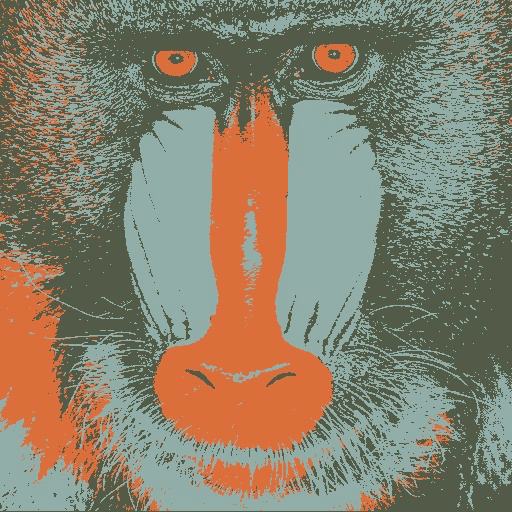
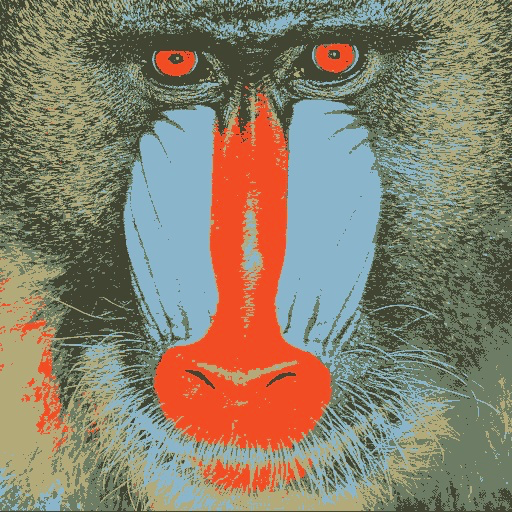
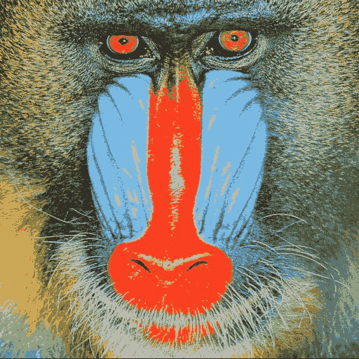
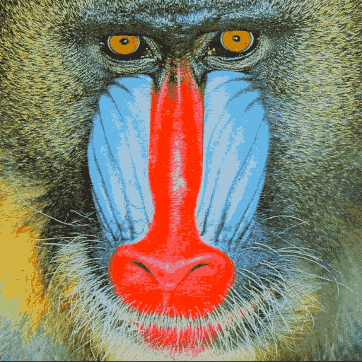

Image quantization (K-Means clustering)
GitHub source code
K-means is hard clustering, either the object(point) belongs to a class or it does not. Here in image quantization we basically repaint the image, with lesser number of colours.
Following are steps involved in K-means:
If k = 3:
Here the points are the colour intensity of each pixel. Finally the three mu will the three colours of the image, all the points classified under a mu will all be colored with the value of the mu. Similary can be extented for k = 5, 10, 20 ...
For k = 3
For k = 5
For k = 10
For k = 20
